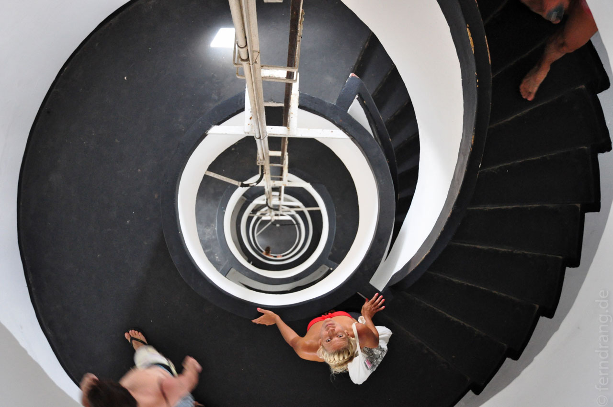

Die nächsten Tage waren dem Weg nach Jeri gewidmet. Entlang der Strecke gibt es einige interessante Sehenswürdigkeiten. Die erste ist Lençóis Maranhenses, eine endlose Dünenlandschaft, die zur Regenzeit halb unter Wasser steht. Da wir zur Trockenzeit da waren, fehlte der letzte Kick, um einen Weltklasse-Ausflug daraus zu machen. Aber die strahlend weißen Dünen waren auch so wunderschön. Wir wurden von einem Monstrum von Truck querfeldein dort hingefahren. Eine brasilianische Familie von unglaublichem Format (vgl. Essgewohnheiten) hat uns die nötige Bodenhaftung verliehen. Die Großmutter mit den Stimmbändern eines Piraten war am besten drauf und hat trotz Fahrtwind der ganzen Truppe mit ihrem Gegröle einen Tinnitus beschert.

Der nächste Tag stand unter dem Motto "Nase im Wind". Beim Bootsausflug zum winzigen Fischerdorf Carubé hat der Kapitän derart Gas gegeben, dass die Mangroven zu grünen Schlieren wurden. Nach zwei überflüssigen Stopps, die eher für betrunkene einheimische Ausflügler konzipiert waren, konnten wir unsere ausgeleierten Mundwinkel am Meer ausruhen lassen. Der Strand ist Hunderte Meter breit und fällt flach ins Meer ab. Mit großem Behagen konnten wir feststellen, dass es mind. 10 Grad wärmer als in Rio ist (wo es mind. 10 Grad zu kalt war).
Die Fahrt ging weiter über die "brasilianische Autobahn" den Strand entlang. Auf dem flachen Sand heizen die Toyotas mit neunzig Sachen. Auf den Freiluftsitzen hinten auf dem Pickup hätten wir Fliegerbrillen gebraucht.
In Totoia sind wir auf ein Boot umgestiegen, das uns durch das Delta das Americas brachte. Wir hatten allerdings die Größe des Deltas unterschätzt. Anstelle einer beschaulichen Mangroven-Besichtigung mussten wir über 40km Strecke machen. In irrem Tempo sind wir zwischen den weitläufigen Mangroveninseln hindurch gerast.
Kurz vor Sonnenuntergang sind wir zu einer kleinen Baum-Insel gefahren, in dem allabendlich die Zusammenkunft der Scharlach-Sichler stattfindet. Schon von weitem konnte man die knallroten Vögel in kleinen Formationen über das Wasser kommen sehen. Nach einer Weile ging das Gezanke um den schönsten Ast los, bis es aussah als wären die Bäume voll großer, roter Früchte.
Nach einer Übernachtung in Parnaiba, wo es nichts zu sehen und zu tun gibt außer eben zu schlafen, ging die Fahrt nach Jeri los. Unser extrem wortkarger Fahrer hat uns über Straßen, Strände, Flüsse, Dünen und Wälder gejagt. Diesmal haben wir drinnen gesessen, was für die Gesichtszüge einen deutlich schonenderen Tag bedeutete.

Nach einem halben Tag kam endlich die sandige Landspitze in Sicht, auf der Jericoacoara auf den Strand gebaut ist. Die letzten Strandabschnitte waren schon voll Kite-Surfern, die hier von der steifen Brise angelockt werden.